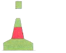

| 221. Плавате в район А, виждате стълбовиден буй. Какво означава?: |
|
Знак за означаване на средствата от Системата за събиране на данни за Световния океан Основния път е на ляво Мини на Север от мен Лява страна на основната посока за движение |
| документ регламентиращ правилния отговор: IALA Maritime Buoyage System NP 735 Diagram 3 |
| 222. Плавате в район А, виждате веха. Какво означава?: |
|
Лява страна на основната посока за движение Мини на Север от мен Основния път е на ляво Място, където преминават подводни кабели |
| документ регламентиращ правилния отговор: IALA Maritime Buoyage System NP 735 Diagram 3 |
| 223. Плавате в район B, виждате зелен цилиндричен буй. Какво означава?: |
|
Лява страна на основната посока за движение Мини на Север от мен Основния път е на ляво Район за военни учения |
| документ регламентиращ правилния отговор: IALA Maritime Buoyage System NP 735 Diagram 4 |
| 224. Плавате в район B, виждате зелена веха. Какво означава?: |
|
Знак, поставен в Системата за разделно движение Мини на Запад от мен Основния път е на ляво Лява страна на основната посока за движение |
| документ регламентиращ правилния отговор: IALA Maritime Buoyage System NP 735 Diagram 4 |
| 225. Плавате в район B, виждате червен коничен буй. Какво означава?: |
|
Мини на Север от мен Район за военни учения Дясна страна на основната посока за движение Основния път е на дясно |
| документ регламентиращ правилния отговор: IALA Maritime Buoyage System NP 735 Diagram 4 |
| 226. Плавате в район B, виждате червен стълбовиден буй. Какво означава?: |
|
Района е за отдих и развлечения Дясна страна на основната посока за движение Мини на Юг от мен Основния път е на ляво |
| документ регламентиращ правилния отговор: IALA Maritime Buoyage System NP 735 Diagram 4 |
| 227. Плавате в район B, виждате цилиндричен буй. Какво означава?: |
|
Знак, поставен в Системата за разделно движение Лява страна на основната посока за движение Мини на Север от мен Основния път е на дясно |
| документ регламентиращ правилния отговор: IALA Maritime Buoyage System NP 735 Diagram 4 |
| 228. Плавате в район B, виждате стълбовиден буй. Какво означава?:  |
|
Основния път е на дясно Мини на Запад от мен Лява страна на основната посока за движение Район за военни учения |
| документ регламентиращ правилния отговор: IALA Maritime Buoyage System NP 735 Diagram 4 |
| 229. Плавате в район B, виждате веха. Какво означава?: |
|
Лява страна на основната посока за движение Основния път е на дясно Място, където преминават подводни кабели Мини на Север от мен |
| документ регламентиращ правилния отговор: IALA Maritime Buoyage System NP 735 Diagram 4 |
| 230. Плавате в район B, виждате коничен буй. Какво означава?: |
|
Знак за означаване на средствата от Системата за събиране на данни са Световния океан Мини на Изток от мен Лява страна на основната посока за движение Основния път е на ляво |
| документ регламентиращ правилния отговор: IALA Maritime Buoyage System NP 735 Diagram 4 |